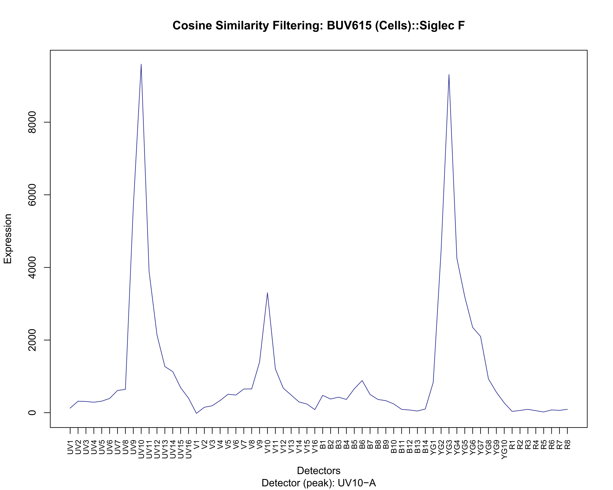
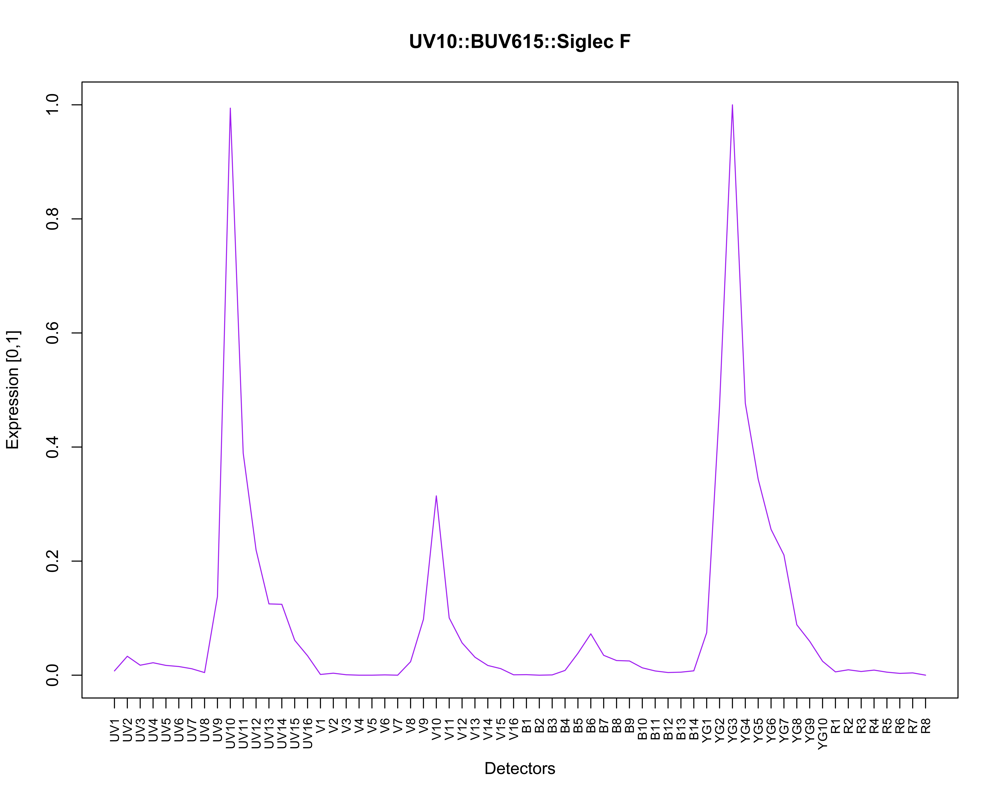

spectracle provides a FULLY AUTOMATED method for processing single-color full spectrum cytometry controls and deriving normalized [0,1] spectra for use in unmixing raw/overdetermined data.
Notice
2026-05-26 – Currently tested/working with (Manufacturer::Instrument::Software):
- Cytek::Aurora(5L)::SpectroFlo 3+ ; (Beads) and (Cells) controls
- OMIP-069
- OMIP-069v2
- OMIP-109
- in-house datasets
Making a Spectacle of Your Spectra
The series of figures below is a visual representation of what can be accomplished when using spectracle.
## simply locate a directory containing raw reference controls
raw.reference.controls <- list.dirs(path = ".")
## execute the function
spectra <- spectracle(raw.reference.controls)The source data used to generate these figures is a single-stained reference control (mouse spleen) – BUV615::Siglec F; in the primary data (not shown), the rare, truly positive events (which number less than ~100) are obscured and/or directly impacted by primary (V7) and secondary (UV7) autofluorescence (AF).
AF Removal to Isolate ‘Spectral Events’ [Figure 2]
In a completely data-driven fashion, the intrusive/nuisance AF is identified, characterized, and then removed from the single-color control to identify/reveal top expressing ‘spectral events’.

Per-cell Matching / Normalized Spectra [Figure 3]
The ‘spectral events’ are scatter-matched using nearest-neighbors to a representative unstained control on a per-cell basis, allowing for accurate AF/background subtraction that is invariant to population spread and/or frequency. The result is well-characterized, normalized spectra that can then be used to unmix raw data.
